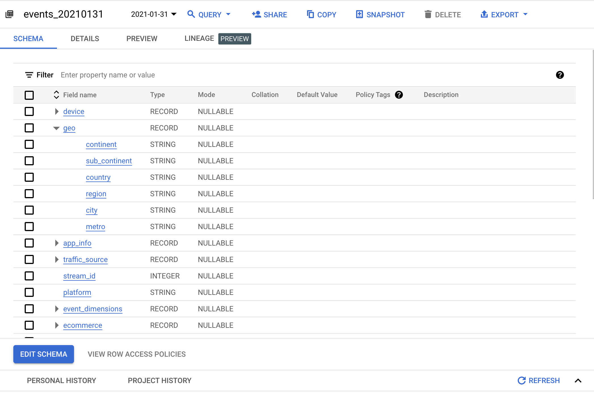
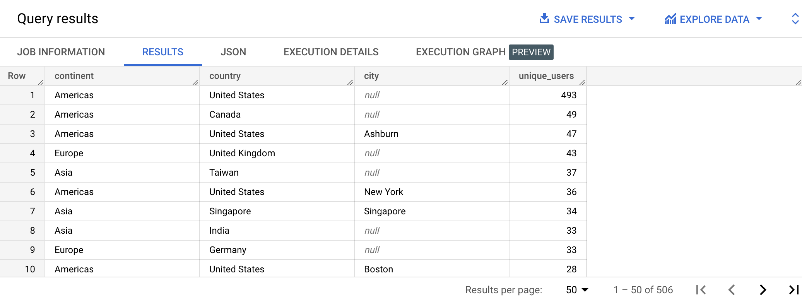
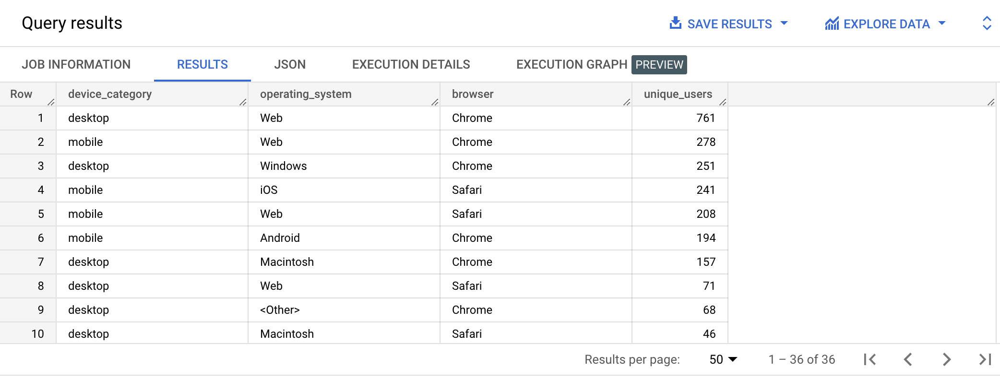
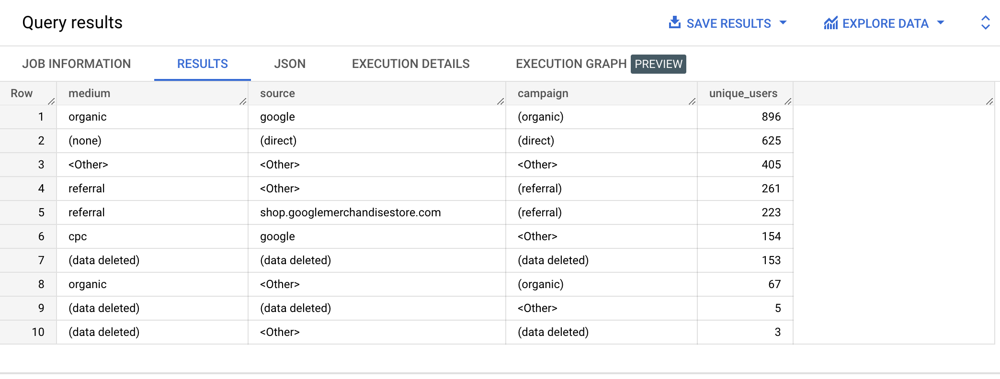

A STRUCT, also known as a RECORD, is a column that’s made of other fields each with a type (required) and field name (optional).

For example, let’s look at the geo record of the first event in the Google Analytics 4 sample data:
SELECT geo
FROM bigquery-public-data.ga4_obfuscated_sample_ecommerce.events_20210131
LIMIT 1;
| geo.continent | geo.sub_continent | geo.country | geo.region | geo.city | geo.metro | Americas | Northern America | United States | California | San Carlos | (not set) |
|---|
Each field of a record can be accessed using the dot notation:
SELECT geo.continent
FROM bigquery-public-data.ga4_obfuscated_sample_ecommerce.events_20210131
LIMIT 1;
| continent | Americas |
|---|
bigquery-public-data.ga4_obfuscated_sample_ecommerce.events_20210131
Write a query that will display the user pseudo id, the device category and the geo record for one event.
| user_pseudo_id | category | geo.continent | geo.sub_continent | geo.country | geo.region | geo.city | geo.metro |
|---|---|---|---|---|---|---|---|
| 1026454.4271112504 | mobile | Americas | Northern America | United States | California | San Carlos | (not set) |
SELECT user_pseudo_id, device.category, geo
FROM bigquery-public-data.ga4_obfuscated_sample_ecommerce.events_20210131
LIMIT 1;
bigquery-public-data.ga4_obfuscated_sample_ecommerce.events_20210131

SELECT geo.continent AS continent,
geo.country AS country,
NULLIF(geo.city, '(not set)') AS city,
COUNT(DISTINCT user_pseudo_id) AS unique_users
FROM bigquery-public-data.ga4_obfuscated_sample_ecommerce.events_20210131
GROUP BY continent,
country,
city
ORDER BY unique_users DESC;
bigquery-public-data.ga4_obfuscated_sample_ecommerce.events_20210131

SELECT device.category AS device_category,
device.operating_system AS operating_system,
device.web_info.browser AS browser,
COUNT(DISTINCT user_pseudo_id) AS unique_users
FROM bigquery-public-data.ga4_obfuscated_sample_ecommerce.events_20210131
GROUP BY device_category,
operating_system,
browser
ORDER BY unique_users DESC;
bigquery-public-data.ga4_obfuscated_sample_ecommerce.events_20210131

SELECT traffic_source.medium AS medium,
traffic_source.source AS source,
traffic_source.name AS campaign,
COUNT(DISTINCT user_pseudo_id) AS unique_users
FROM bigquery-public-data.ga4_obfuscated_sample_ecommerce.events_20210131
GROUP BY medium, source, campaign
ORDER BY unique_users DESC;